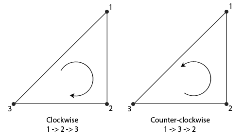
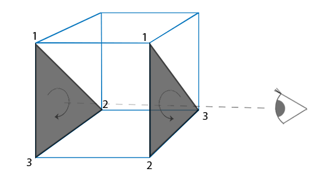
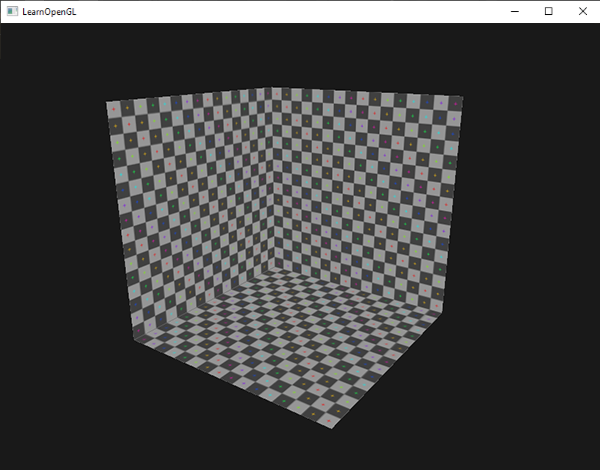

페이스 컬링
머릿속으로 3D 큐브(직육면체)를 떠올리고 어느 방향에서든 볼 수 있는 면의 최대 개수를 세어보세요. 상상력이 풍부하지 않더라도 아마 최대 3개라는 답이 나올 겁니다. 큐브는 어떤 위치나 방향에서 보더라도 3개 이상의 면을 볼 수는 없습니다. 그렇다면 보이지도 않는 나머지 3개의 면을 굳이 그릴 필요가 있을까요? 만약 이 면들을 어떤 방식으로든 제거할 수 있다면, 큐브의 프래그먼트 셰이더 실행 횟수를 50% 이상 줄일 수 있을 겁니다!
50% 대신 50% 이상이라고 하는 이유는 특정 각도에서는 두 면 또는 한 면만 보일 수 있기 때문입니다. 그런 경우에는 50% 이상을 절약할 수 있습니다.
정말 훌륭한 아이디어지만, 해결해야 할 문제가 하나 있습니다. 객체의 특정 면이 보는 사람의 시점에서 보이지 않는지 어떻게 알 수 있을까요? 닫힌 도형을 생각해 보면, 각 면에는 두 개의 측면(방향)이 있습니다. 각 측면은 사용자를 향하거나 사용자에게 등을 보이고 있죠(바깥 면과 안쪽 면). 만약 보는 사람을 향하고 있는 면만 렌더링할 수 있다면 어떨까요?
이것이 바로 페이스 컬링(face culling)의 원리입니다. OpenGL은 뷰어를 향하는 모든 정면 면을 확인하고 렌더링하는 반면, 후면을 향하는 면은 모두 버림으로써 프래그먼트 셰이더 호출 횟수를 크게 줄입니다. 단, 어떤 면이 정면이고 어떤 면이 후면인지 OpenGL에 알려줘야 합니다. OpenGL은 정점 데이터의 와인딩 순서를 분석하는 영리한 방법을 사용합니다.
와인딩 순서
삼각형의 정점을 정의할 때, 우리는 시계 방향 또는 반시계 방향으로 특정 순서로 정점을 정의합니다. 각 삼각형은 3개의 정점으로 구성되며, 삼각형의 중심에서 바라본 순서대로 이 3개의 정점을 지정합니다.

이미지에서 보시는 것처럼 먼저 첫 번째 정점을 정의하고, 그 다음 정점을 2번 또는 3번으로 선택할 수 있습니다. 이 선택이 삼각형의 감기 순서를 결정합니다. 다음 코드는 이를 보여줍니다.
float vertices[] = {
// 시계 방향
vertices[0], // vertex 1
vertices[1], // vertex 2
vertices[2], // vertex 3
// 반시계 방향
vertices[0], // vertex 1
vertices[2], // vertex 3
vertices[1] // vertex 2
};
삼각형 기본 요소를 구성하는 각 3개의 정점 집합에는 회전 순서가 포함되어 있습니다. OpenGL은 기본 요소를 렌더링할 때 이 정보를 사용하여 삼각형이 앞면(front-facing) 삼각형인지 뒷면(back-facing) 삼각형인지 판단합니다. 기본적으로 반시계 방향으로 정점이 정의된 삼각형은 앞면 삼각형으로 처리됩니다.
정점 순서를 정의할 때는 해당 삼각형이 마치 나를 향해 서 있는 것처럼 시각화합니다. 따라서 지정하는 각 삼각형은 내가 그 삼각형을 정면에서 바라볼 때 시계 반대 방향으로 회전해야 합니다. 이렇게 모든 정점을 지정하는 방식의 장점은 실제 회전 순서가 래스터화 단계, 즉 정점 셰이더가 이미 실행된 후에 계산된다는 것입니다. 그러면 정점들은 보는 사람의 시점에서 보이게 됩니다.
보는 사람이 바라보는 모든 삼각형 정점은 우리가 지정한 순서대로 정확하게 배열되어 있지만, 정육면체 반대편에 있는 삼각형의 정점은 배열 순서가 반전된 형태로 표현됩니다. 결과적으로, 우리가 바라보는 삼각형은 앞면이 보이는 삼각형으로, 뒷면의 삼각형은 뒷면이 보이는 삼각형으로 나타납니다. 다음 이미지는 이러한 효과를 보여줍니다.

정점 데이터에서 두 삼각형을 모두 시계 반대 방향 순서(앞쪽 삼각형과 뒤쪽 삼각형을 각각 1, 2, 3)로 정의했습니다. 하지만 보는 사람의 현재 시점에서 뒤쪽 삼각형을 1, 2, 3 순서로 그리면 뒤쪽 삼각형이 시계 방향으로 렌더링됩니다. 뒤쪽 삼각형을 시계 반대 방향 순서로 지정했음에도 불구하고 시계 방향으로 렌더링되는 것입니다. 이는 보이지 않는 면을 제거(컬링)하려는 우리의 의도와 정확히 일치하는 결과입니다!
페이스 컬링
이 장의 시작 부분에서 OpenGL은 뒷면을 향하는 삼각형으로 렌더링될 경우 해당 삼각형 기본 요소를 제거할 수 있다고 언급했습니다. 이제 정점의 와인딩 순서를 설정하는 방법을 알았으므로 기본적으로 비활성화되어 있는 OpenGL의 페이스 컬링 옵션을 사용할 수 있습니다.
이전 장에서 사용했던 큐브 정점 데이터는 반시계 방향 감기 순서를 고려하지 않고 정의되었기 때문에, 반시계 방향 감기 순서를 반영하도록 정점 데이터를 업데이트했습니다. 여기에서 업데이트된 데이터를 복사하여 사용할 수 있습니다. 각 삼각형의 정점이 모두 반시계 방향으로 정의되어 있다는 것을 시각화하는 것이 좋습니다.
페이스 컬링을 활성화하려면 OpenGL의 GL_CULL_FACE 옵션을 활성화하기만 하면 됩니다.
이 시점부터 앞면이 아닌 모든 면은 버려집니다(큐브 내부를 날아다니며 모든 내부 면이 실제로 버려지는 것을 확인해 보세요). 현재 OpenGL이 뒷면을 렌더링 전에 먼저 버리도록 판별하면 프래그먼트 렌더링 성능이 50% 이상 향상됩니다(그렇지 않으면 깊이 테스트에서 렌더링 후에 뒷면이 버려졌을 것입니다). 이 방법은 큐브와 같은 닫힌 도형에서만 제대로 작동합니다. 이전 장에서 다룬 풀잎을 그릴 때는 앞면과 뒷면이 모두 보여야 하므로 면 컬링을 다시 비활성화해야 합니다.
OpenGL을 사용하면 컬링할 면의 유형을 변경할 수도 있습니다. 앞면만 컬링하고 뒷면은 컬링하지 않으려면 어떻게 해야 할까요? glCullFace를 사용하여 이러한 동작을 정의할 수 있습니다.
glCullFace(GL_FRONT);
glCullFace 함수에는 세 가지 옵션이 있습니다.
GL_BACK: 뒷면만 제거합니다.GL_FRONT: 전면 면만 제거합니다.GL_FRONT_AND_BACK: 앞면과 뒷면 모두를 제거합니다.
glCullFace의 초기값은 GL_BACK입니다. 또한 glFrontFace를 통해 시계 방향 면을 앞면으로 사용하는 것을 선호하도록 OpenGL에 알려줄 수도 있습니다.
glFrontFace(GL_CCW);
기본값은 반시계 방향 정렬을 의미하는 GL_CCW이며, 다른 옵션은 (당연히) 시계 방향 정렬을 의미하는 GL_CW입니다.
간단한 테스트로, OpenGL에게 앞면의 순서가 반시계 방향이 아닌 시계 방향으로 결정되도록 알려줌으로써 감기 순서를 반전시킬 수 있습니다.
glEnable(GL_CULL_FACE);
glCullFace(GL_BACK);
glFrontFace(GL_CW);
그 결과 뒷면만 렌더링됩니다.

참고로 기본 반시계 방향 감기 순서로 전면 면을 제거하면 동일한 효과를 얻을 수 있습니다.
glEnable(GL_CULL_FACE);
glCullFace(GL_FRONT);
보시다시피, 페이스 컬링은 최소한의 노력으로 OpenGL 애플리케이션의 성능을 향상시키는 데 매우 유용한 도구입니다. 특히 모든 3D 애플리케이션이 기본적으로 일정한 와인딩 순서(반시계 방향)로 모델을 내보내기 때문에 더욱 효과적입니다. 다만, 페이스 컬링을 통해 성능 향상을 얻을 객체와 컬링 대상에서 제외해야 할 객체를 구분하는 것이 중요합니다.
연습문제
- 각 삼각형을 시계 방향으로 지정하여 정점 데이터를 재정의한 다음, 시계 방향 삼각형을 전면으로 설정하여 장면을 렌더링할 수 있습니까? (해결 방법)